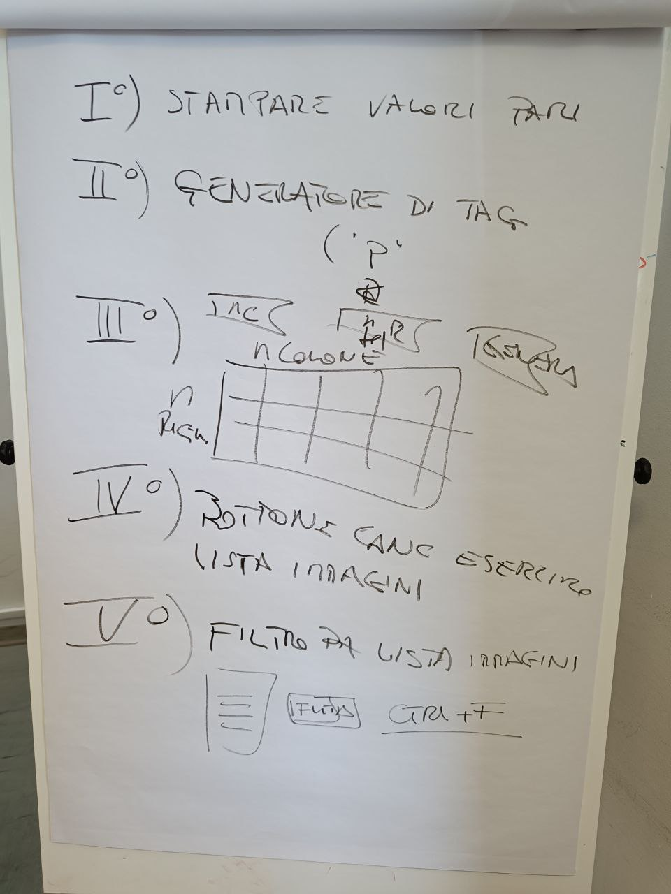

Compiti per Giovedì 6 Aprile

compiti per venerdi
esercizio 1 - stampare valori pari
esercizio 2 - generatore di stringhe per inner html
Costruire una funzione che genera un tag html
quindi è una funzione che ritorna una stringa che se inserita all'interno di un innerHTML genera un tag.
Ovviamente non è possibile usare i metodi di javascript DOM
esercizio 3 - tabelle date righe x colonne
input righe, input colonne , tasto genera.
cliccando su genera crea una tabella che ha il numero di righe e colonne immesse nell'input
esercizio 4 - continua es visualizza immagini
bottone cancella elementi dall'esercizio di venerdí
esercizio 5 - continua es visualizza immagini
sull'esercizio di venerdí 31 creare un filtro é che dato un input text cerca nella lista coi nomi immagini